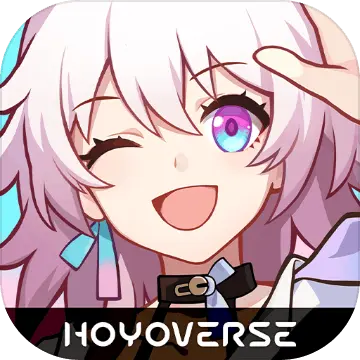

Welcome to my Page!
What is HSR?
Honkai: Star Rail, or HSR for short, is a role-playing gacha video game developed by miHoYo, published by miHoYo in mainland China and worldwide by COGNOSPHERE, d/b/a HoYoverse. It is miHoYo's first turn-based game, features the main character, referred to as the Trailblazer, traveling across worlds through the Astral Express to help and connect the worlds while resolving disasters caused by "Stellarons" and other third-parties. The first closed beta test was launched on October 27, 2021. It was publicly released internationally on April 26, 2023, for Windows and mobile devices; with the PlayStation 5 port released on October 11, 2023. The PlayStation 4 version is still yet to be announced, as revealed at the latest Summer Game Fest with a trailer. It is the fourth installment in the Honkai series, utilizing some characters from Honkai Impact 3rd and some gameplay elements from miHoYo's previous action RPG, Genshin Impact.
Partially due to the popularity of miHoYo's previous game, Honkai Impact 3rd, the game received widespread expectations before its launch. It was nominated for the Most Wanted Game Award at the Golden Joystick Awards in 2022, won the Best Popularity Award of World Science Fiction Game Annual Awards in 2023, and Best Mobile Game Award in the Game Awards 2023.
What is Pull Value?
In HSR, in order to get characters to use outside of the freely given ones, you need to 'pull' for them, which essentially means spending a certain currency to have a chance of obtaining a character. There are so called limited characters, always on a special 'limited banners', where you can obtain them. They are called limited, because their banners are only available for 3 weeks, before disappearing until they get a rerun.
Pull Value is a sort of metric that ranks these characters based on how valuable they are for your account. However this is extremely subjective, as people value things differently. Most of the playerbase plays the game casually, they usually pull for characters they like, be it their appearence, their story relevance, story background, animations and so on. In this list of mine, I'm going to try approaching this subject more from the meta side, as in what characters are valuable in terms of gameplay strengs. Thankfully though all limited characters are pretty decent and will be able to clear content most of the time.
Is Pull Value important?
To be quite honest, not really. It is borderline useless for people who are determined to get a certain character they like, or to not get a certain character they dislike. However for those who are unsure whether or not to get a certain character, it could help them out.
Click here to visit the official HSR website: Link